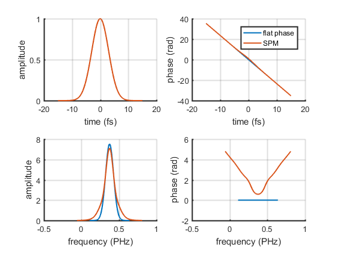
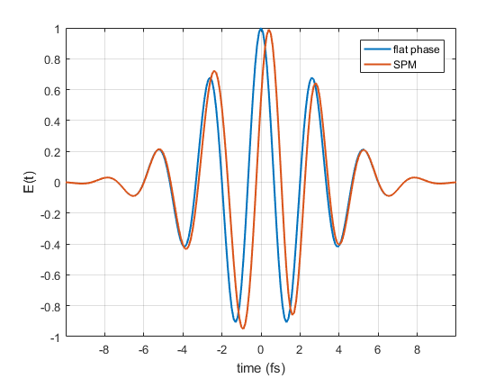

Example simulation of self-phase modulation using LaserPulse class
Very basic simulation, assuming thin sample and instantaneous rensponse (see e.g. Boyd 'Nonlinear Optics' Academic Press 2008).
The self-phase modulation phase is:
phi_NL(t) == n2eff * I(t)
where n2eff is an effective nonlinear refreactive index, given by:
n2eff == n2 * 2*pi*centralFrequency/speedOfLight * sampleThickness
Contents
Set-up simulation
% 5fs gaussian pulse centered at t0 = 1fs and f0 = 300THz p = gaussianPulse('units', 'fs', 'fwhm', 5, 't0', 0, 'f0', 300/800, ... 'dt', 0.1, 'nPoints', 2048); % physical constants speedOfLight = 300; % nm / fs % material properties n2eff = 1; p2 = p.copy; p2.temporalPhase = p2.temporalPhase + n2eff * p2.temporalIntensity;
Plot pulses
% amplitude-phase plot ax = p.plot(); p2.plot(ax) legend(ax(2),'flat phase','SPM');
% real part of electric field figure() plot(p.timeArray, real(p.temporalField), p2.timeArray, real(p2.temporalField), ... 'LineWidth', 1.5) xlim([-2,2]*p.duration) xlabel(sprintf('time (%s)', p.timeUnits)); ylabel('E(t)') legend('flat phase', 'SPM') grid on